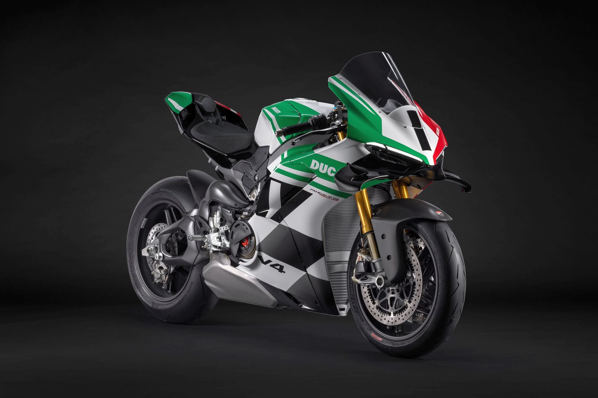
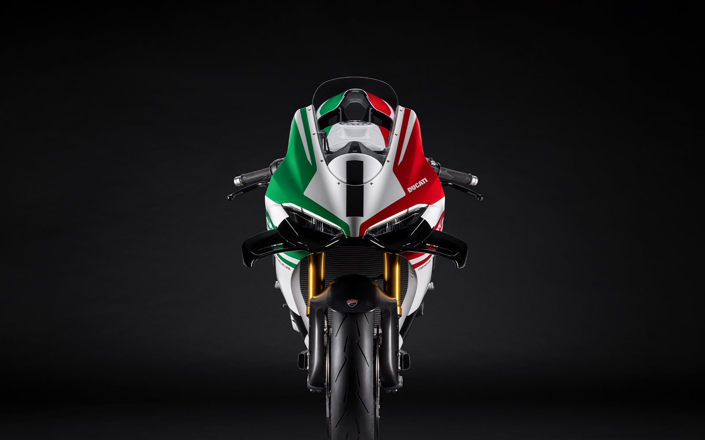
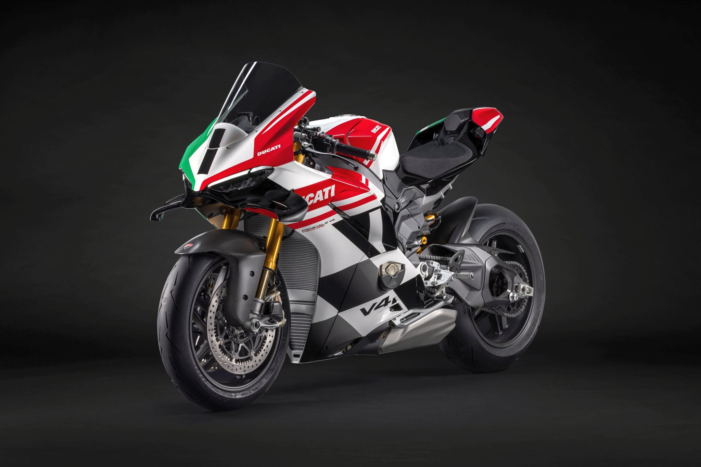
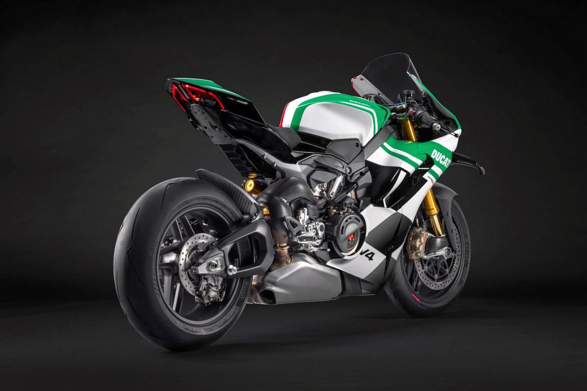
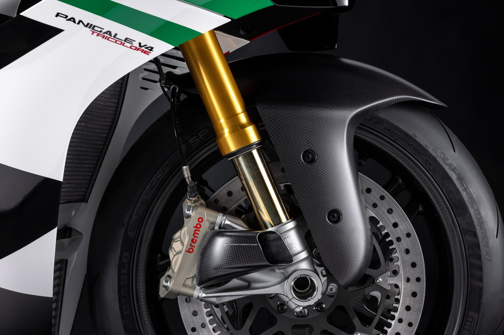
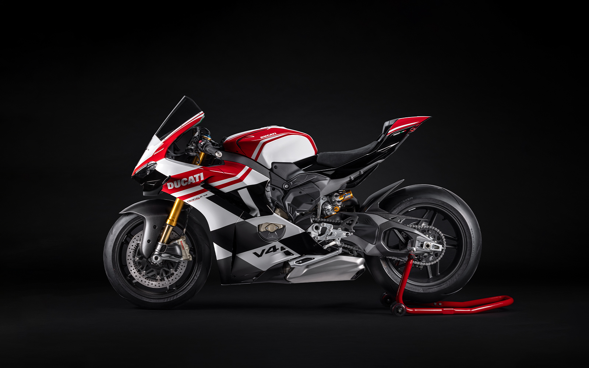
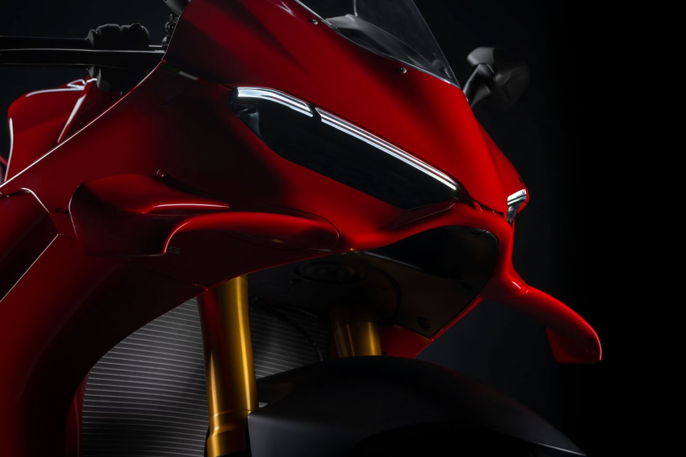
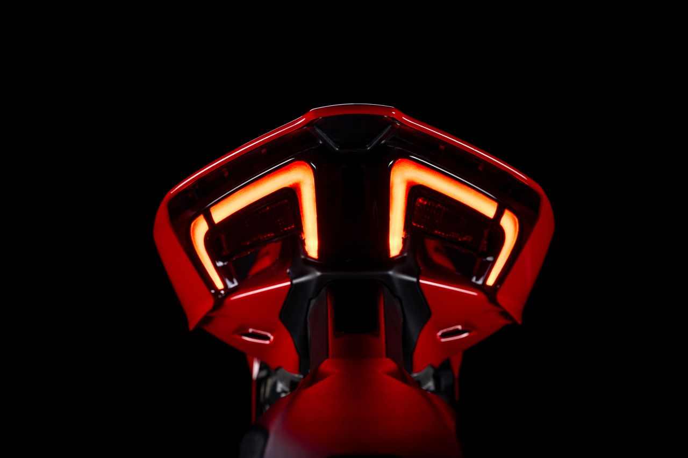

Vista frontal-lateral dreta - Elegància i potència.

Vista frontal - Control i precisió en cada detall.

Vista frontal-lateral esquerra - Una màquina que destaca des de qualsevol angle.

Vista posterior-lateral dreta - Tecnologia avançada al servei del rendiment.

Vista de la forquilla - Experiència de conducció incomparable.

Vista lateral esquerra - Un disseny aerodinàmic impecable.

Vista del morro - Preparada per a la velocitat i l’adrenalina.

Vista posterior - Una màquina que destaca des de qualsevol angle.